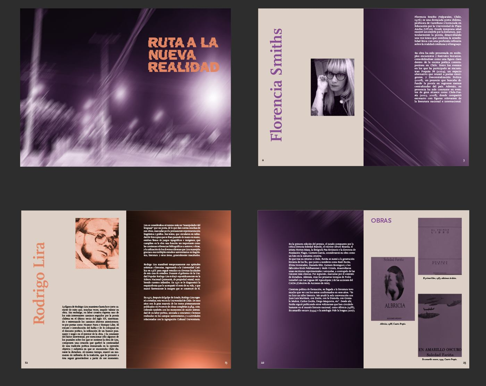

Personal / Editorial
Afiche · publicación
Poetas
en papel.

POETAS✦
Sobre el proyecto
Propuesta editorial para una colección de poetas, desarrollada a través de un afiche en formato A3, una publicación y piezas desplegables. El sistema explora cómo la tipografía, la composición y el objeto impreso pueden construir una atmósfera propia.
Recorrido visual
01 / 08
Detalle del afiche · 01